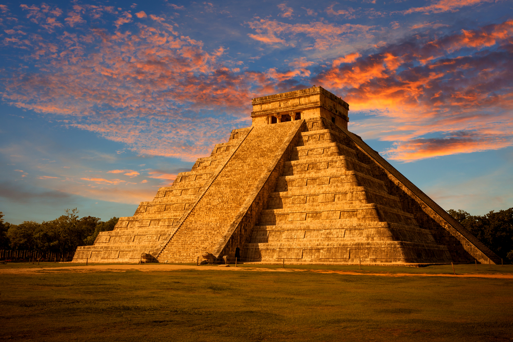

|  |
CHICHEN ITZA - MÉXICOEl Templo Kukulcán es la construcción más conocida de Chichen Itzá, el sitio arqueológico maya que se encuentra en el norte de la península de Yucatán. |
COLISEO - ITALIALa construcción del Coliseo inició en el 71 d.C., y su propósito era albergar juegos de gladiadores, batallas navales y lucha con animales. |

|
 |
CRISTO REDENTOR - BRASILEn 1921 se mandó construir el Cristo en el cerro de Corcovado que ya era un atractivo turístico en Río de Janeiro. La estatua mide 38 metros. |
MACHU PICCHU - PERÚSe cree que la construcción de Machu Picchu data del siglo XV, aunque arqueólogos concluyen que fue ocupada en distintos periodos. |

|

|
LA GRAN MURALLA - CHINAPara proteger a su imperio, el emperador Qin Shi Huang restauró murallas antiguas formando un muro de 5 mil kilómetros que para la dinastía Mig se extendería hasta 8 mil kilómetros. |
PETRA - JORDANIAPetra, una ciudad esculpida en piedra, fue fundada en el siglo VII a.C. y abandonada en el siglo VIII por el cambio de rutas comerciales, y terremotos. |
 |

|
TAJ MAHAL - INDIAEn su lecho de muerte, la esposa favorita del rey Shah Jhan, le pidió que le construyera un monumento único en el mundo. En la construcción del Taj Mahal participaron 20 mil obreros. |